library(tidyverse)library(ggpubr)#create data framedf <-data.frame(team=c('A', 'B', 'C'),points=c(22, 28, 15))#create bar plot using dfggplot(df, aes(x=team, y=points, fill=team)) +geom_bar(stat ="identity")
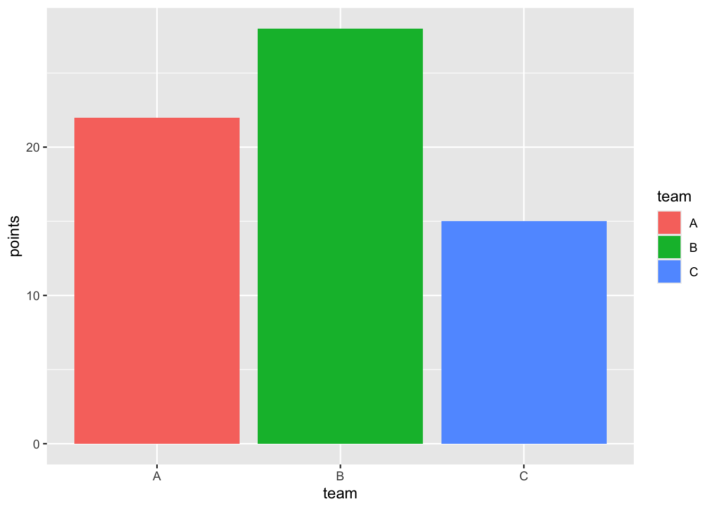
To obtain the hex codes of these colours we can use the hue_pal function…
library(scales)#extract hex color codes for a plot with three elements in ggplot2 hex <-hue_pal()(3)#display hex color codeshex## [1] "#F8766D" "#00BA38" "#619CFF"show_col(hex)
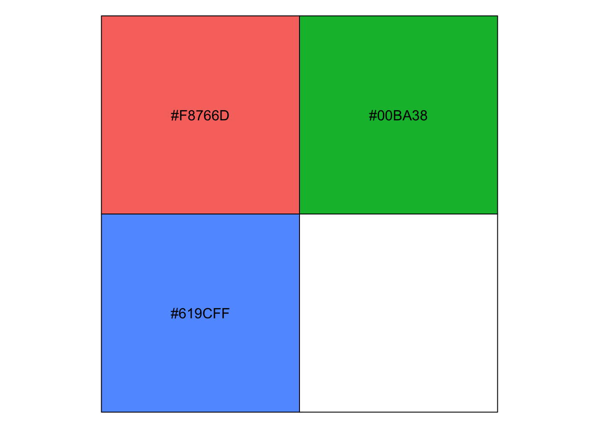
To see the colours ggplot2 will use as standard with different numbers of groups…
#set margins of plot areapar(mai =c(0.1, 0, 0.1, 0), bg ="grey85")#create plot with ggplot2 default colors from 1 to 8gc.grid <-layout(matrix(1:8, nrow =8))for(i in1:8){ gc.ramp <-hue_pal()(i)plot(c(0, 8), c(0,1),type ="n", bty="n", xaxt="n", yaxt="n", xlab="", ylab="")for(j in1:i){rect(j -1, 0, j -0.25, 1, col = gc.ramp[j]) }}
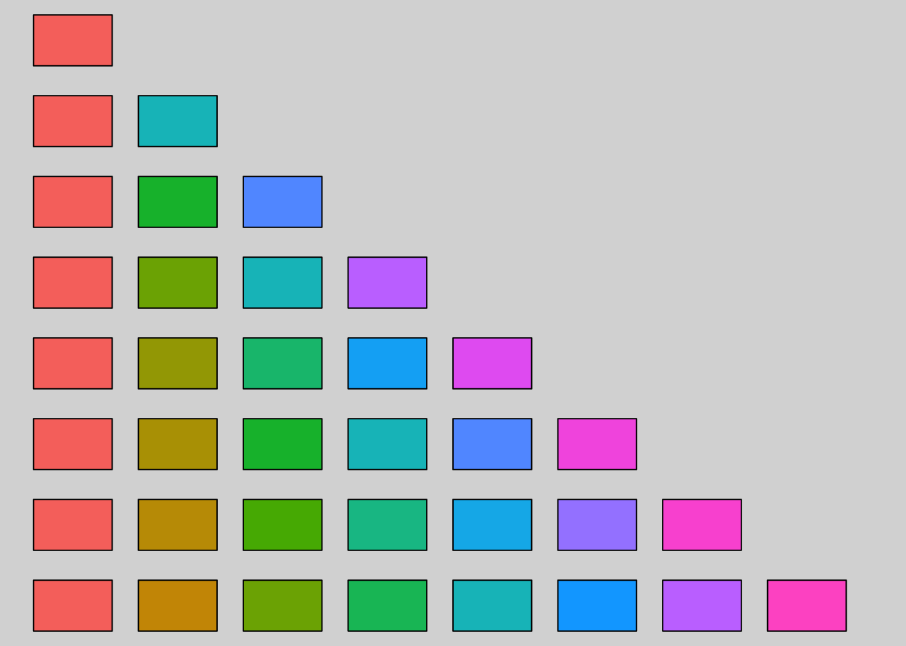
We can the also return the hex codes associated with them.
#display ggplot2 default hex color codes from 1 to 8for(i in1:8){print(hue_pal()(i))}
Colour gradients.. here illustrated with a 2d density estimate of the faithful dataset (Azzalini and Bowman 1990), which records the waiting time between eruptions and during each eruption for the Old Faithful geyser in Yellowstone Park.
eruptions numeric Eruption time in mins.
waiting numeric Waiting time to next eruption (in mins).
density 2d density estimate.
We hide the legends and set expand to 0, to focus on the appearance of the data.
Remember: although we use the erupt plot to illustrate concepts using with a fill aesthetic, the same ideas apply to colour scales. Any time we refer to scale_fill_() in this section there is a corresponding scale_colour_() for the colour aesthetic.
# scale_fill_gradient - produces a two-colour gradienteruptb <- erupt +scale_fill_gradient(low ="#ff8200", high ="#7082d4")# scale_fill_gradient2() produces a three-colour gradient with specified midpointeruptc <- erupt +scale_fill_gradient2(low ="#f25c91", mid ="white", high ="#00ab85", midpoint =mean(faithfuld$density))# scale_fill_gradientn() produces an n-colour gradient# Not sure of the use of this... ggarrange(erupt, eruptb, eruptc,labels =c("A", "B", "C"),ncol =2, nrow =2)
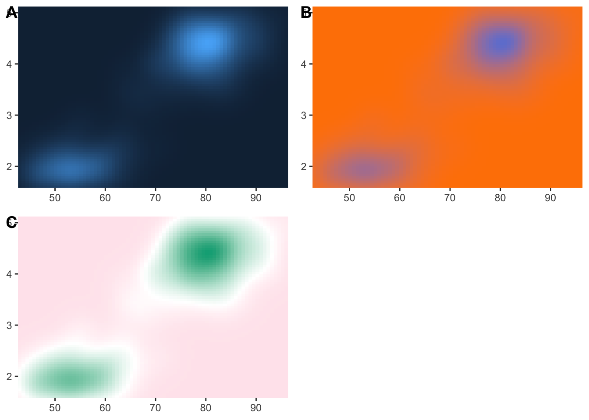
3.2.1.1 Missing data in continuous scales
df <-data.frame(x =1, y =1:5, z =c(1, 3, 2, NA, 5))base <-ggplot(df, aes(x, y)) +geom_tile(aes(fill = z), linewidth =5) +labs(x =NULL, y =NULL) +scale_x_continuous(labels =NULL)ggarrange(base, base +scale_fill_gradient(na.value =NA), base +scale_fill_gradient(na.value ="yellow"),labels =c("A", "B", "C"),ncol =2, nrow =2)
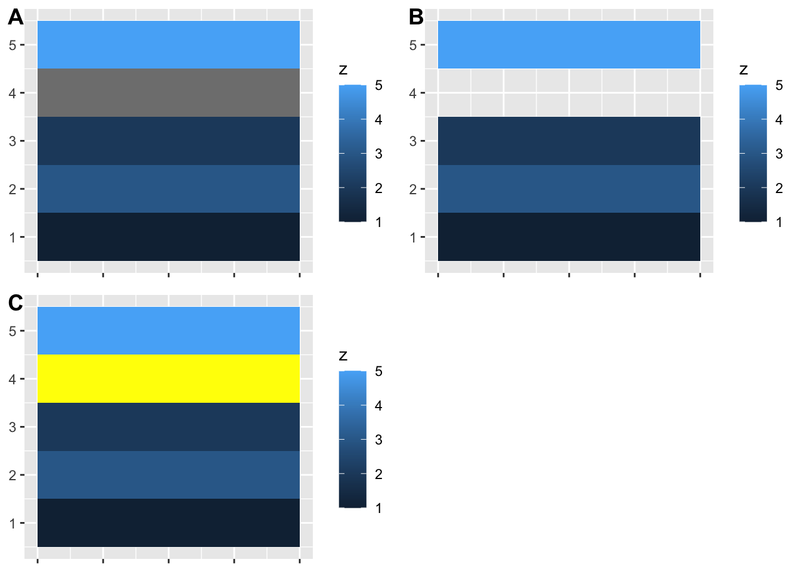
3.2.1.2 Limits, breaks, and labels
base <-ggplot(mpg, aes(cyl, displ, colour = hwy)) +geom_point(size =2)ggarrange( base, base +scale_color_gradient(limits =c(0, 100)), base +scale_color_gradient(breaks =c(10, 15, 20,25,30,35,40)),labels =c("A", "B", "C"),ncol =2, nrow =2)
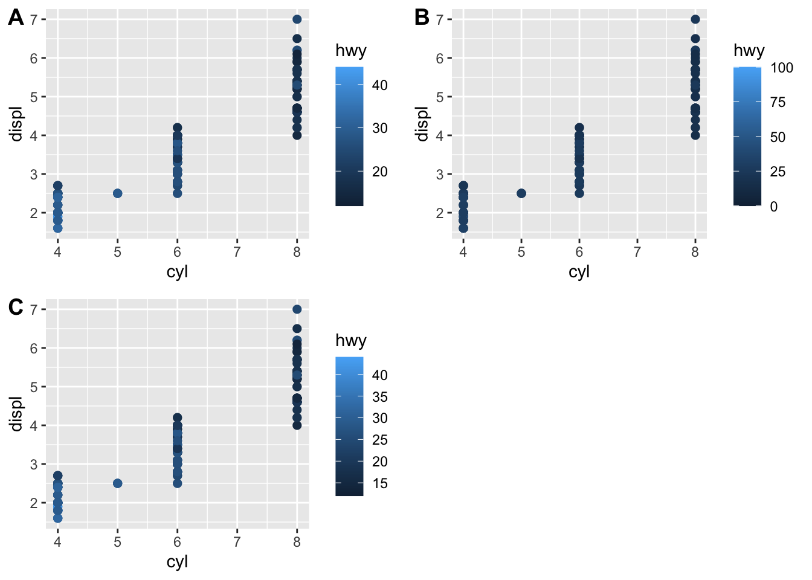
3.2.1.3 Legends in continuous scales
basea <- base +guides(colour =guide_colourbar(reverse =TRUE))baseb <- base +guides(colour =guide_colourbar(barheight =unit(2, "cm")))basec <- base +guides(colour =guide_colourbar(direction ="horizontal"))ggarrange( basea, baseb, basec,labels =c("A", "B", "C"),ncol =2, nrow =2)
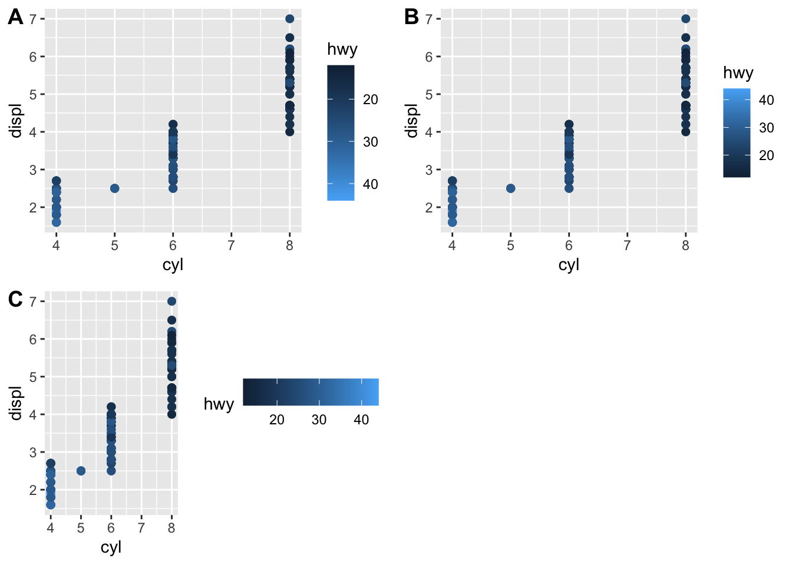
3.2.1.4 What is a good colour scale for continous data?
My preference for most charts is one colour from opaque to low opacity. As shown below, when you run from one colour to another the results are often hard to follow. The exception perhaps are maps, where a third middle colour, that can be white, works quite well. This does not work for something like a dot plot.
base <-ggplot(mpg, aes(cyl, displ, colour = hwy)) +geom_point(size =2) basea <- base +scale_color_gradient(low ="#ccede8",high ="#00ab85")baseb <- base +scale_color_gradient(low ="#f25c91",high ="#7082d4")basec <- base +scale_color_gradient(low ="#F8766D",high ="#619CFF")based <- base +scale_color_gradient2(low ="#F8766D",high ="#00BFC4", mid ="white", midpoint =median(mpg$hwy))ggarrange( basea, baseb, basec,based,labels =c("A", "B", "C","D"),ncol =2, nrow =2)
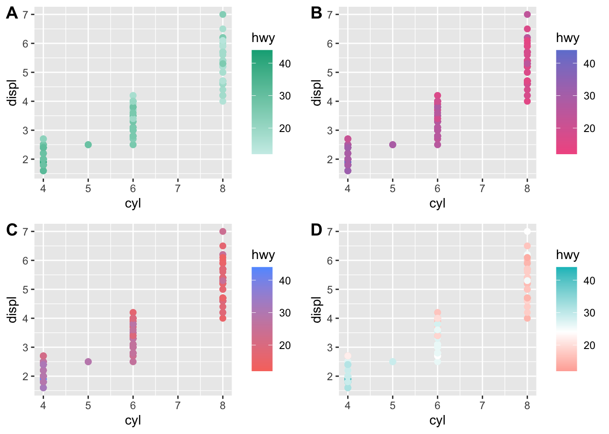
3.2.1.5 Colour Brewer scales
Or Colour Brewer has a set of sequential scales to choose from.
RColorBrewer::display.brewer.all(type ="seq")
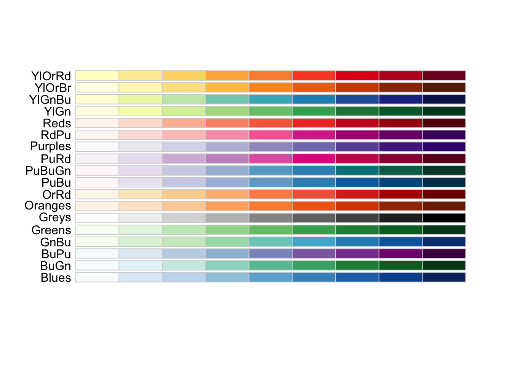
Of the below I like YlGn and OrRd.
Note use of scale_colour_distiller for distilling a categorised fill colour from a continuous variable.
basea <- base +scale_colour_distiller(palette ="Blues")baseb <- base +scale_colour_distiller(palette ="YlGn")basec <- base +scale_colour_distiller(palette ="OrRd")based <- base +scale_colour_distiller(palette ="BuGn")ggarrange( basea, baseb, basec,based,labels =c("A", "B", "C","D"),ncol =2, nrow =2)
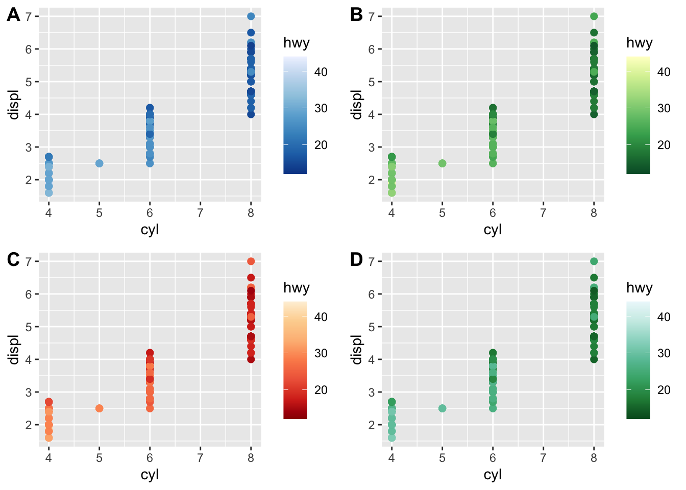
3.2.2 Categorical colours
penguin <- palmerpenguins::penguins library(gtsummary)penguin %>%tbl_summary(label =list( species ~"Penguin species", island ~"Island in Palmer Archipelago", bill_length_mm ~"Bill length (millimeters)", bill_depth_mm ~"Bill depth (millimeters)", flipper_length_mm ~"Flipper length (millimeters)", body_mass_g ~"Body mass (grams)", sex ~"Penguin sex", year ~"Study year"), missing_text ="Missing", statistic =list(all_continuous() ~"{mean}"))
Characteristic
N = 3441
Penguin species
Adelie
152 (44%)
Chinstrap
68 (20%)
Gentoo
124 (36%)
Island in Palmer Archipelago
Biscoe
168 (49%)
Dream
124 (36%)
Torgersen
52 (15%)
Bill length (millimeters)
43.9
Missing
2
Bill depth (millimeters)
17.15
Missing
2
Flipper length (millimeters)
201
Missing
2
Body mass (grams)
4,202
Missing
2
Penguin sex
female
165 (50%)
male
168 (50%)
Missing
11
Study year
2007
110 (32%)
2008
114 (33%)
2009
120 (35%)
1 n (%); Mean
For up to 3 colours I think basic ggplot does a great job.
species <- penguin %>%group_by(species) %>%summarise(n =n()) %>%mutate(species_percent =100* (n/sum(n)))year <- penguin %>%group_by(year) %>%summarise(n =n()) %>%mutate(year_percent =100* (n/sum(n)))sex <- penguin %>%group_by(sex) %>%summarise(n =n()) %>%mutate(sex_percent =100* (n/sum(n)))island <- penguin %>%group_by(island) %>%summarise(n =n()) %>%mutate(island_percent =100* (n/sum(n)))bar1 <- species %>%ggplot(aes(x = species, y = species_percent, fill = species)) +geom_col()bar2 <- sex %>%ggplot(aes(x = sex, y = sex_percent, fill = sex)) +geom_col()bar3 <- island %>%ggplot(aes(x = island, y = island_percent)) +geom_col()bar4 <- year %>%ggplot(aes(x = year, y = year_percent)) +geom_col(fill ="#00BFC4")ggarrange( bar1, bar2, bar3, bar4,labels =c("A", "B", "C", "D"),ncol =2, nrow =2)
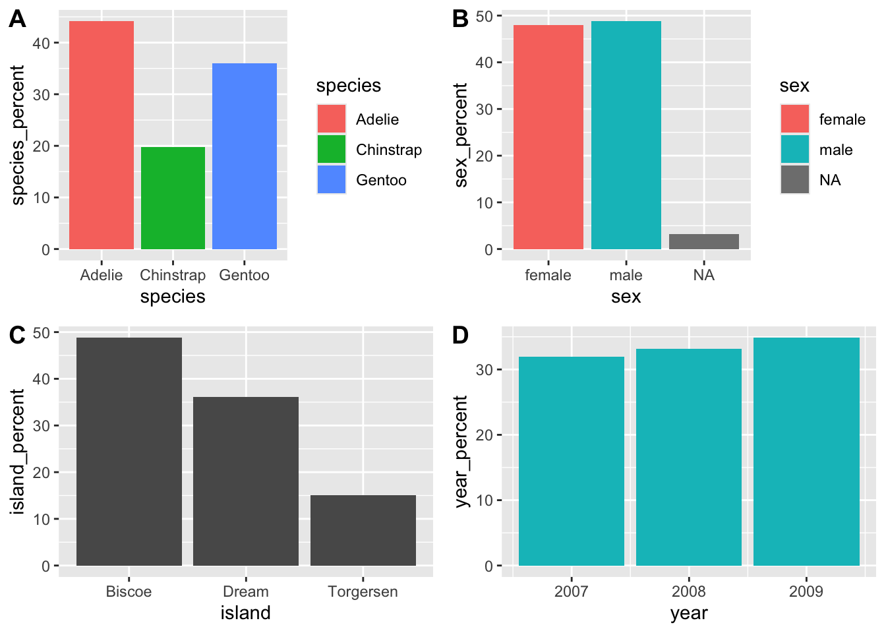
Once you get beyond three, however, I think further colours are required.
maxcolors category colorblind
Accent 8 qual FALSE
Dark2 8 qual TRUE
Paired 12 qual TRUE
Pastel1 9 qual FALSE
Pastel2 8 qual FALSE
Set1 9 qual FALSE
Set2 8 qual TRUE
Set3 12 qual FALSE
Warning in RColorBrewer::brewer.pal(n, pal): n too large, allowed maximum for palette Pastel2 is 8
Returning the palette you asked for with that many colors
Warning in RColorBrewer::brewer.pal(n, pal): n too large, allowed maximum for palette Set2 is 8
Returning the palette you asked for with that many colors
Warning in RColorBrewer::brewer.pal(n, pal): n too large, allowed maximum for palette Accent is 8
Returning the palette you asked for with that many colors
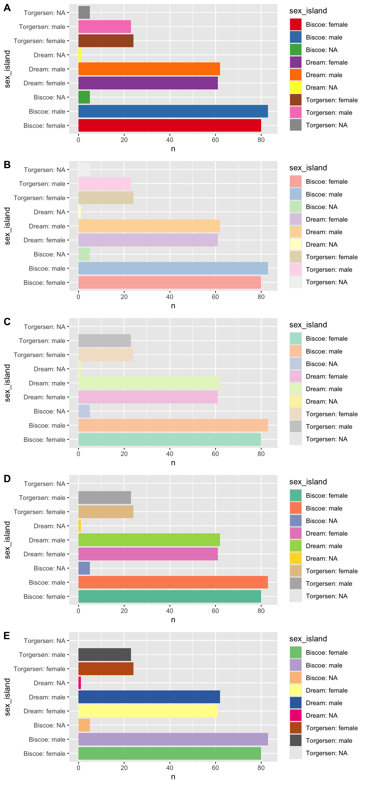
A last one from paletteer. Only has up to 5 colours. The Van Gogh palette. Not sure what I’d use it for.
The first option uses the second most opaque NatCen colours.
The second uses the most opaque and the fourth most opaque set of colours. * The third options is the first, third and least most opaque colours.
The final one is the most opaque and the least.
# For less than 5...bar1 +scale_fill_manual(values =c("#8f99de","#f57da8","#33bd9e","#bf75b5","#ff9c33"))
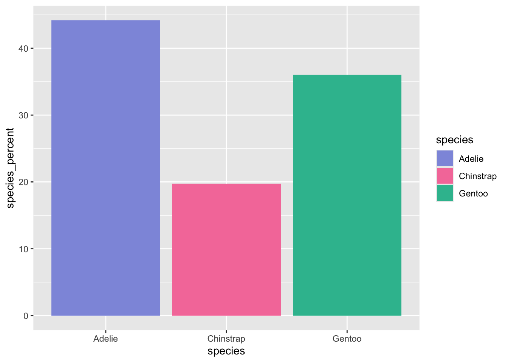
# For UP TO 10...bar5 +scale_fill_manual(values =c("#7082d4","#c7cced","#f25c91","#fabfd4","#00ab85","#99decf","#b053a1","#debad9","#ff8200","#ffcc99"))
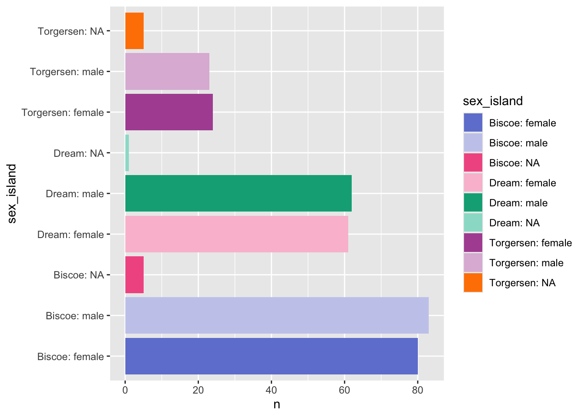
# In an ideal world this might need to be (as the group variable has three levels): bar5 +geom_col(color ="black") +scale_fill_manual(values =c("#7082d4","#abb5e5","#e3e5f5","#f25c91","#f79ebf","#fcdee8","#00ab85","#66ccb5","#ccede8","#b053a1","#d199c7","#f0deed","#ff8200","#ffb566","#ffe5cc"))
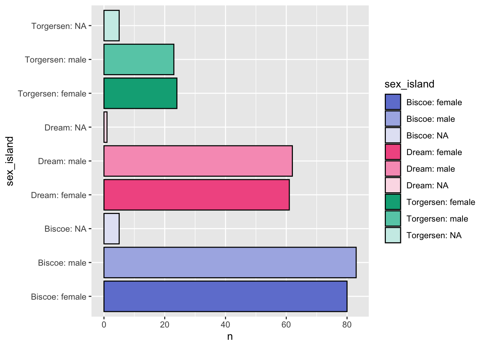
# Whereas with two levels it could look like this: penguin %>%filter(!grepl(": NA", sex_island)) %>%count(sex_island) %>%ggplot(aes(x = sex_island, y = n, fill = sex_island)) +geom_col() +coord_flip() +scale_fill_manual(values =c("#7082d4","#c7cced","#f25c91","#fabfd4","#00ab85","#99decf","#b053a1","#debad9","#ff8200","#ffcc99"))
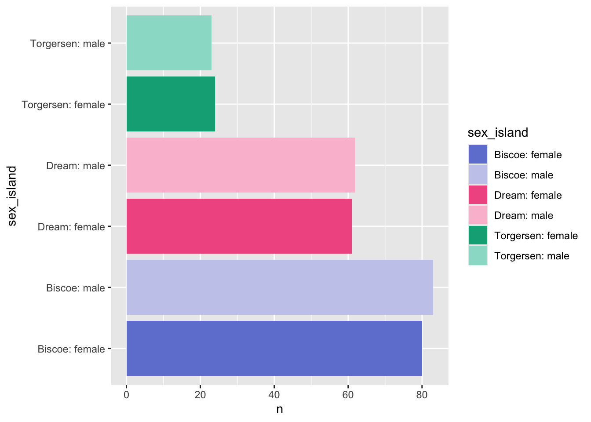
3.2.2.1 Fill colour for points points
# scatter plotdf <-data.frame(x =1:3+runif(30), y =runif(30), z =c("a", "b", "c"))point <-ggplot(df, aes(x, y)) +geom_point(aes(colour = z)) +theme(legend.position ="none") +labs(x =NULL, y =NULL)# three palettespoint # Basic one is quite nice here with limited set of data
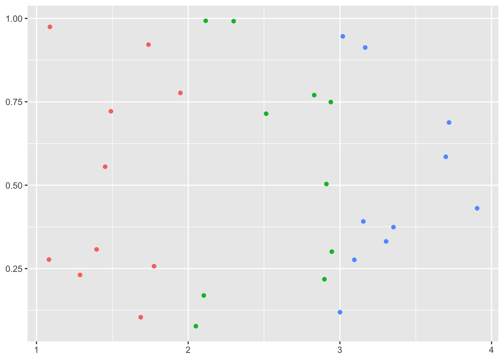
point +scale_colour_brewer(palette ="Set1")
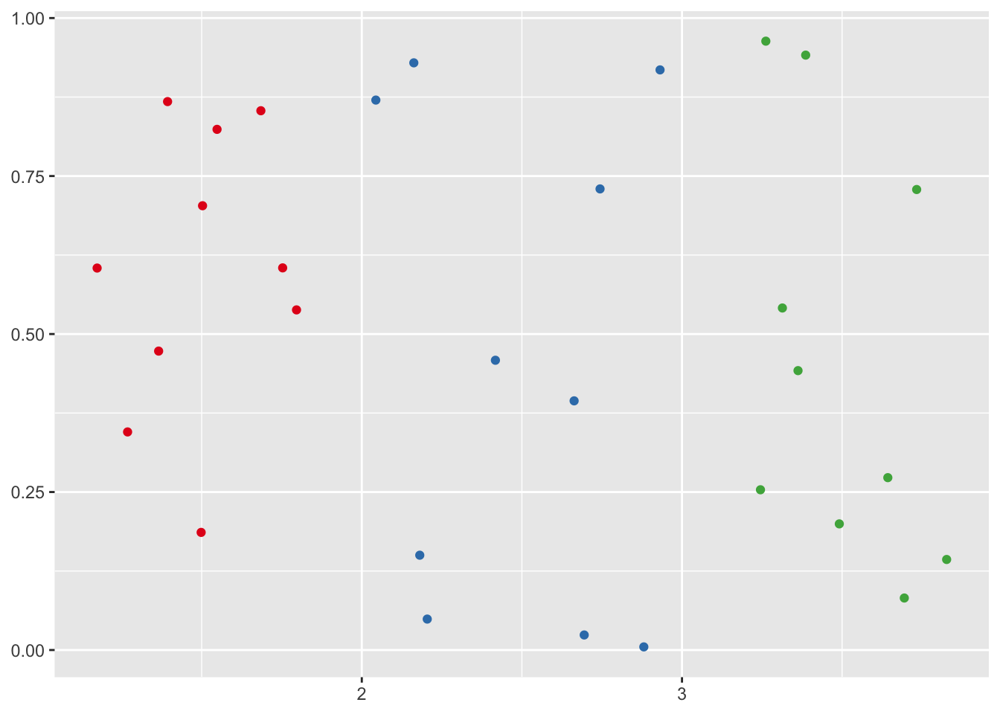
point +scale_colour_brewer(palette ="Dark2")
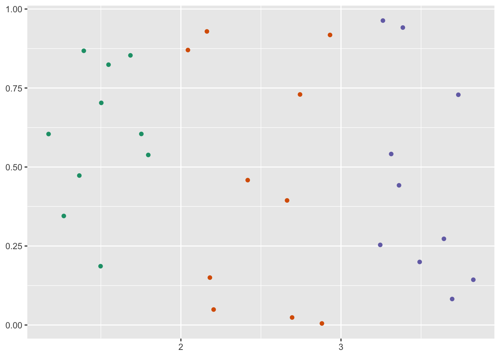
3.3 A how to guide on defining palettes
The below is taken from R for the rest of us.
Their first step is to define a list of colours as objects.
They then put these in a function, so that these values are passed to the function scale_colour_manual each time it is run.
This first one is for categorical variables where the ordering of the colours is not meaningful.
# Qualitative -------------------------------------------------------------scale_color_ga_qualitative <-function() {scale_color_manual(values =c(ga_blue, ga_pink, ga_yellow, ga_purple, ga_gray, ga_brown))}palmerpenguins::penguins %>%ggplot() +geom_point(aes(x = bill_length_mm, y = flipper_length_mm,color = island)) +labs(title ="Palmer Penguins", subtitle ="Look at them go!",x ="Bill length",y ="Flipper length") +theme_minimal() +scale_color_ga_qualitative()## Warning: Removed 2 rows containing missing values or values outside the scale range## (`geom_point()`).
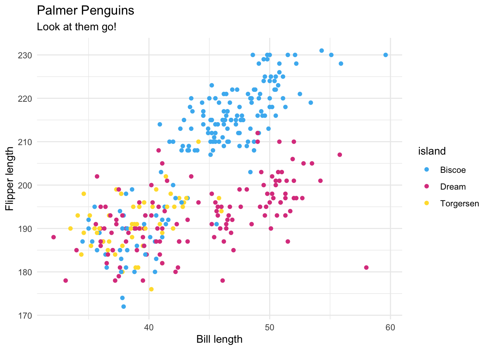
Before the next example they load some interesting looking data about the 2020 US Presidential Election. They also load shapefiles from the tigris package for US Counties, so these results can be mapped onto a US electoral map.
# Download Data -----------------------------------------------------------library(tigris)## To enable caching of data, set `options(tigris_use_cache = TRUE)`## in your R script or .Rprofile.# Downloaded from https://github.com/tonmcg/US_County_Level_Election_Results_08-20presidential_returns_by_county <-read_csv("https://github.com/tonmcg/US_County_Level_Election_Results_08-20/raw/master/2020_US_County_Level_Presidential_Results.csv")## Rows: 3152 Columns: 10## ── Column specification ────────────────────────────────────────────────────────## Delimiter: ","## chr (3): state_name, county_fips, county_name## dbl (7): votes_gop, votes_dem, total_votes, diff, per_gop, per_dem, per_poin...## ## ℹ Use `spec()` to retrieve the full column specification for this data.## ℹ Specify the column types or set `show_col_types = FALSE` to quiet this message.
# Done with tigris packageus_counties <-counties()
Next they do a sequential scale. Again, a function is defined where the progression of colour matters, setting this through the low and high arguments of the scale_fill_gradient function.
data(mpg)head(mpg)## # A tibble: 6 × 11## manufacturer model displ year cyl trans drv cty hwy fl class ## <chr> <chr> <dbl> <int> <int> <chr> <chr> <int> <int> <chr> <chr> ## 1 audi a4 1.8 1999 4 auto(l5) f 18 29 p compa…## 2 audi a4 1.8 1999 4 manual(m5) f 21 29 p compa…## 3 audi a4 2 2008 4 manual(m6) f 20 31 p compa…## 4 audi a4 2 2008 4 auto(av) f 21 30 p compa…## 5 audi a4 2.8 1999 6 auto(l5) f 16 26 p compa…## 6 audi a4 2.8 1999 6 manual(m5) f 18 26 p compa…
ggplot(data = mpg, mapping =aes(x = displ, y = hwy, linetype = drv, colour=drv)) +geom_smooth() +geom_point() +scale_color_manual(values = mp)## `geom_smooth()` using method = 'loess' and formula = 'y ~ x'
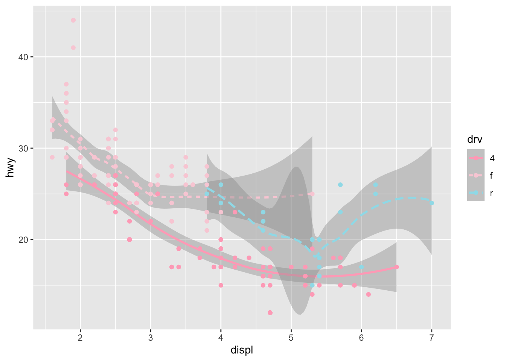
3.5.1 A trial set of categorical colours
Hideous.
cp <-c("#86ADDC","#F08DFE","#FF9D93","#8AC3A6")ggplot(data = mpg, mapping =aes(x = displ, y = hwy, linetype = drv, colour=drv)) +geom_smooth() +geom_point() +scale_color_manual(values = cp)## `geom_smooth()` using method = 'loess' and formula = 'y ~ x'